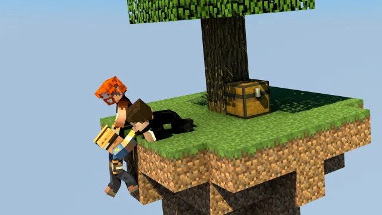

Complete Skyblock gameplay
Build your server around islands, progression, challenges, and party play.
Skyblock for Spigot and Paper.
Start on a small floating island, build it into something thriving, complete challenges, and team up with other players to push your island further.

Learn islands, challenges, parties, and the player command flow.
Open player docsInstall uSkyBlock, verify startup, and configure gameplay for your server.
Open setup guideBuild from source, inspect the architecture, and extend the plugin responsibly.
Open developer docsuSkyBlock gives you a complete Skyblock foundation with island progression, deep customization, and a maintained open-source codebase you can build on long term.
Build your server around islands, progression, challenges, and party play.
Shape the experience with gameplay-focused configuration, including challenge design, biome options, custom island schematics, permissions, and more.
Extend uSkyBlock through its public API and placeholder support so it fits cleanly into your existing server systems.
uSkyBlock is fully open source under GPLv3, free to run, and backed by more than a decade of community project history.
Run a project that continues to evolve for current Paper and Spigot versions, with new features, public docs, public issue tracking, and ongoing maintenance.
Support a global player base with 53 bundled languages and active translation contribution opportunities.
Canonical docs for players, admins, and developers.
Source code, releases, history, and active development.
Bug reports, regressions, and feature requests.
Help translate uSkyBlock and improve localization.
Plugin listing for the Spigot ecosystem.
Paper-friendly release listing and discovery.